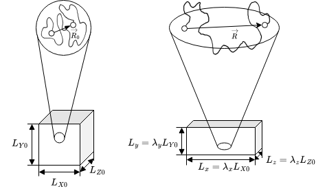
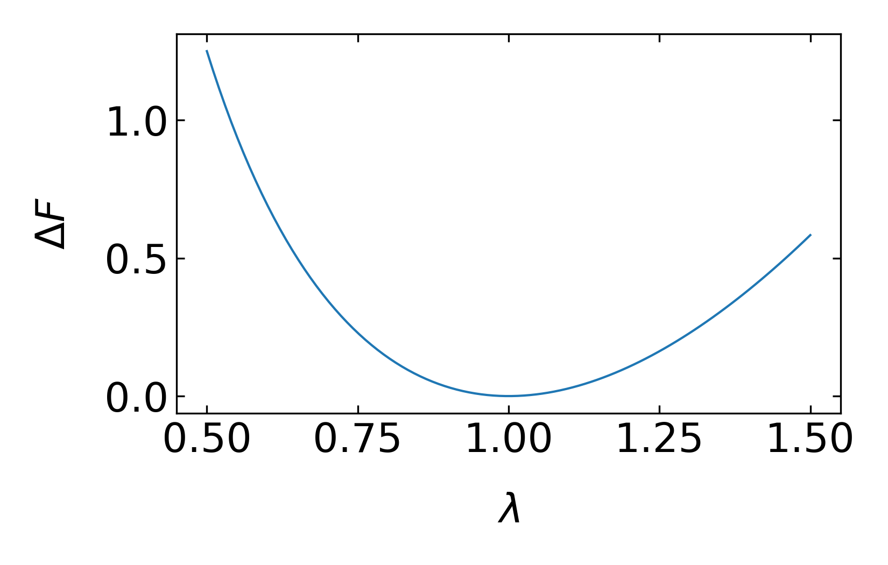
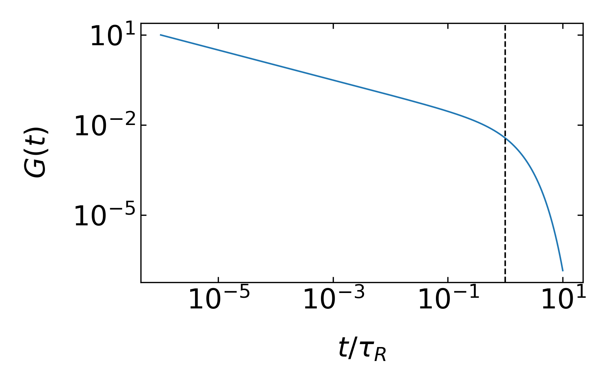
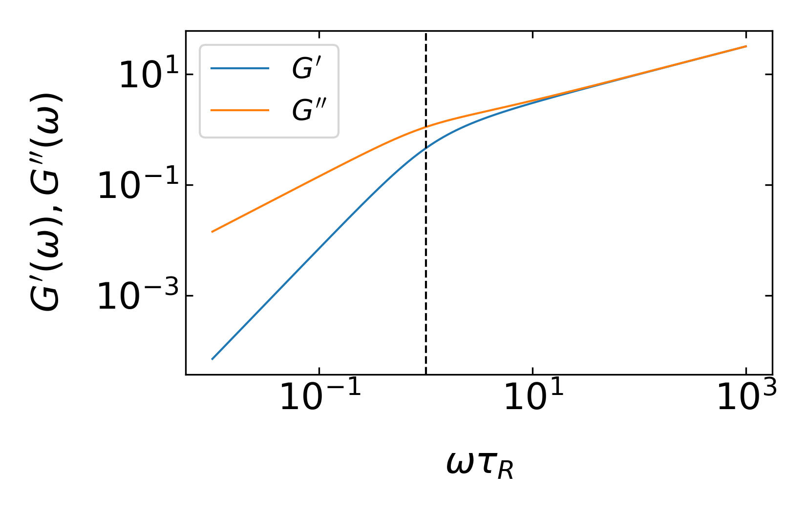
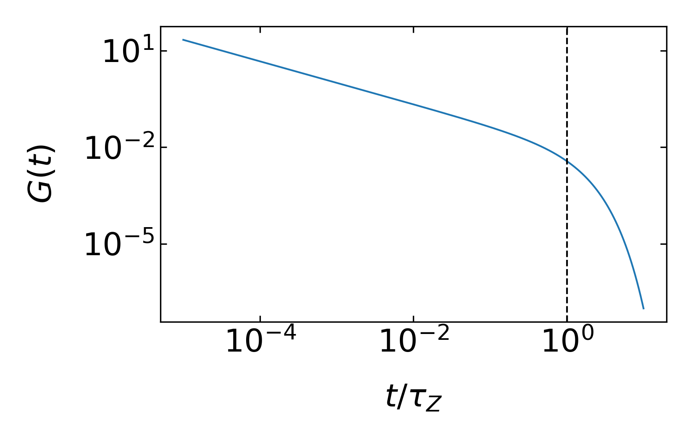
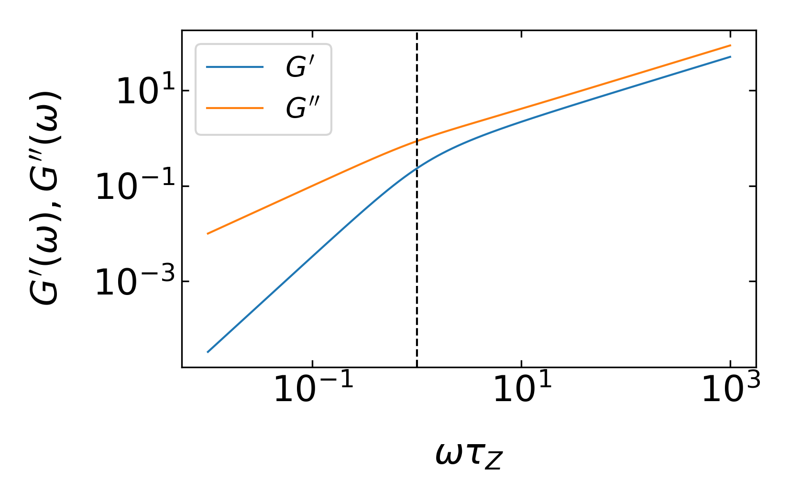

import numpy as np
import matplotlib.pyplot as plt
from numpy.linalg import norm
from scipy.constants import c,epsilon_0,e,physical_constants
import json
%config InlineBackend.figure_format = 'retina'
with open('style.json', 'r') as fp:
style = json.load(fp)
plt.rcParams.update(style) 33 Dynamics of Polymers
After we have introduced a phenomenological model for the viscoelasticity of materials, we would like to connect this to the dynamics of polymers. This means, that we have to connect the reponse of a polmyer to deformations to the polymer chain in a way.
33.1 Diffusion of a Single Polymer Chain
A first clue on the dynamics is already given by a process of the diffusion of the polymer chain. During diffusion, all segments fluctuate with the position and experience hdrodynamic friction. If the molecule would be a rigid sphere of radius \(R\), the diffusion coefficient would be given by the Stokes-Einstein relation
\[ D=\frac{k_\mathrm{B}T}{\gamma}=\frac{k_\mathrm{B} T}{6\pi\eta R}. \]
Using the mean-squared displacement \(\langle r^{2}\rangle=6Dt\), this also means that the particle will diffuse a distance corresponding to its own size in a time
\[ \tau=\frac{R^2}{D}=\frac{R^2}{k_\mathrm{B} T}\gamma. \]
For a polymer, which is now a flexible entity, this time means that all conformational fluctuations have relaxed at this time and the polymer chain is displaced by its own radius. This, therefore, sets the longest timescale of relaxation. This relaxation timescale can now be obtained with different dynamic approaches, which are the Rouse model and the Zimm model. Both models differ mainly in how the hydrodynamic coupling of individual segments are considered.
33.1.1 Rouse Model
In the Rouse model, the polymer is approximated by a bead-spring model (Gaussian chain) of \(N\) segments:
\[ \gamma\frac{\mathrm{d}\vec{R}_n}{\mathrm{d}t}=k\left [ \vec{R}_{n-1} - \vec{R}_{n} + \vec{R}_{n+1} - \vec{R}_{n}\right ] +\vec{f}_n(t), \]
where the force on the segment \(n\) at a position \(\vec{R}_n\) is given by the forces exerted from the neighboring elements with a spring constant \(k=3k_\mathrm{B} T/b^2\) and the thermal noise force \(\vec{f}_n(t)\).
Each of the segments is experiencing a friction given by the factor \(\gamma\). The total friction on the Rouse chain is now assumed to be
\[ \gamma_\mathrm{R}=N\gamma \]
which needs some short explanation, as this is one key assumption of the Rouse model. Imagine you have 5 different rigid spheres each experiencing the same friction coefficient and they are far apart from each other. The total friction coefficient will be \(5\gamma\). Yet if the spheres come closer to each other, the hydrodynamic flow fields around each sphere influence each other until the point when they are in close contact and act as a new body. In this case, the friction coefficient will not be just the sum of all friction coefficients. This means, that the assumption of the Rouse model is now that the individual beads cause only localized flow fields when fluctuating, which are, in turn, not influencing the motion of the other segments.
According to that, we may write down the time to diffuse the size \(R\) of the polymer as
\[ \tau_\mathrm{R}=\frac{R^2}{k_\mathrm{B} T}N \gamma \]
which is the Rouse time. At times shorter than the Rouse time, the polymer exhibits viscoelastic relaxation modes. The longest relaxation mode is that of the whole chain, which is the Rouse time \(\tau_\mathrm{R}\). As the size of the polymer chain is approximately given by \(R\approx bN^{\nu}\) with \(\nu\) beeing the fractal dimension (e.g., the Flory exponent) of the chain we obtain for the Rouse time
\[ \tau_\mathrm{R}=N \frac{\gamma}{\underbrace{k_\mathrm{B} T}_{\tau_{0}}} b^{2} N^{2 \nu}=\tau_{0} N^{2 \nu+1}, \]
where \(\tau_0\) is the relaxation time for a single segment in the chain. Depending if we now consider an ideal or a real chain, we find different scaling of the Rouse time with the number of segments, i.e.:
\[ \tau_\mathrm{R} \propto\left\{\begin{array}{l} \tau_{0} N^{2} \qquad \text { for ideal chain }(\nu=1 / 2) \\ \tau_{0} N^{11 / 5} \quad \,\,\text {for real chain in good solvent }(\nu \approx 3 / 5) \end{array}\right. \]
which is just a simple estimate.
The full calculation by Rouse for an ideal chain shows a similar result, which is
\[ \tau_\mathrm{R}=\frac{1}{6 \pi^{2}} \frac{\gamma b^{2}}{k_\mathrm{B} T} N^{2}. \]
To summarize, on time scales smaller than \(\tau_{\rm R}\), we expect to find viscoelastic modes of the polymer contributing to the modulus, while for modes larger than \(\tau_{\rm R}\) everything should be diffusive.
33.1.2 Zimm Model
The Zimm model takes care of the fact that each segment is generating a flow field that decays as \(1/r\) and is thus typically long range. Thus segments in the chain volume (the so-called pervaded volume) are coupled by hydrodynamics in solution. This has to be taken into account for the dynamics of the polymer chain and the fact that the Rouse model neglects that restricts its validity essentially to the melt region (a system of polymer chains without solvent) only.
This hydrodynamic coupling in the Zimm model changes the friction coefficient of the chain to
\[ \gamma_\mathrm{Z}\approx \eta R \]
with \(R\) being the root-mean-squared end-to-end distance of the polymwer chain as used also in the Rouse model. Thus the Zimm chain behaves hydrodynamically more like a solid sphere rather than a collection of individual beads.
With \(R=bN^{\nu}\) we find for the Zimm relaxation time
\[ \tau_{\rm Z} \approx \frac{R^{2}}{D_{\rm Z}} \approx \frac{\gamma_{\rm Z}}{k_{\rm B} T} R^{2} \approx \frac{\eta}{k_{\rm B} T} R^{3} \approx \frac{\eta b^{3}}{k_{\rm B} T} N^{3 \nu}=\tau_{0} N^{3 \nu} \]
while the full calculation by Zimm shows
\[\begin{equation} \tau_{\rm Z}=\frac{1}{2 \sqrt{3 \pi}} \frac{\eta}{k_{\rm B} T} R^{3}\tag{Zimm time}. \end{equation}\]
Using the exponents \(\nu\) for the ideal and the real chains, we can now make predictions for the scaling of the Zimm relaxation time for both chains, which gives
\[ \tau_{\rm Z} \propto \begin{cases}\tau_{0} N^{3 / 2} & \text { for ideal chain }(\nu=1 / 2) \\ \tau_{0} N^{9 / 5} & \text { for real chain in good solvent }(\nu=3 / 5)\end{cases}. \]
Thus, the scaling of relaxation times as predicted by the Zimm and the Rouse model are different. Which regime is valid has to be decided based on experimental results. As mentioned before, the Zimm model is rather valid for dilute polymer solutions, while the Rouse model rather applies to the dynamics of polymer chains in the melt.
33.2 Intrinsic viscosity of polymer solutions
In dilute solutions, polymer chains are isolated and deformed in an affine way. In such solutions, polymers linearly increase the viscosity of the solution with increasing concentration. To study the contribution of the polymer chains to the viscosity of the solution we define a specific viscosity
\[ \eta_{\rm sp}=\frac{\eta-\eta_{\rm s}}{\eta_{\rm s}}, \]
where \(\eta\) is the viscosity of the solvent with polymers and \(\eta_{\rm s}\) is the one of the solvent only. One may also write the same expression as \(\eta_{\rm sp}=\eta_{\rm r}-1\) where \(\eta_{\rm r}=\eta/\eta_{\rm s}\) is the reduced viscosity. The contribution of a single polymer chain is then measured by the intrinsic viscosity
\[ [\eta]=\lim_{c\rightarrow 0}\frac{\eta_{\rm sp}}{c}, \]
where \(c\) is the polymer concentration. Note that the intrinsic vsicosity now has the unit of an inverse concentration. Using this intrinsic value we may connect now the viscosity to the shear modulus, e.g., by using the result of the Maxwell model:
\[ \eta \approx G(\tau)\int \exp(-t/\tau)\mathrm{d}t=G(\tau)\tau. \]
33.2.1 Affine Deformation and Entropy
To include the polymer in the shear viscosity, we have to consider an affine deformation of the chain.

As we have discussed earlier, the entropy of a single chain with an end-to-end distance \(R\) can be calculated from
\[\begin{eqnarray} S(R)&=&k_\mathrm{B} \ln(p(\vec{R},N))+{\rm const}\\ &=&-\frac{3}{2}\frac{k_\mathrm{B} R^2}{Nb^2}+{\rm const}. \end{eqnarray}\]
In our lab system the end-to-end vector length \(R^2\) can be expressed by its components such that
\[ S(R)=-\frac{3}{2}\frac{k_B (R_x^2+R_y^2+R_z^2)}{Nb^2}+{\rm const}. \]
If we now introduce a deformation
\[ L_x=\lambda_x L_{X0},\, L_y=\lambda_y L_{Y0},\, L_z=\lambda_z L_{Z0} \]
where the \(\lambda\) are just scaling factors for the volume, we can also assume that the components of the end-to-end vectro scale in the same way, i.e.
\[ R_x=\lambda_x R_{X0},\, R_y=\lambda_y R_{Y0},\, R_z=\lambda_z R_{Z0} \]
such that we obtain for the change in entropy upon deformation
\[ \Delta S=S(R)-S(R_0)=\frac{3}{2}\frac{k_B}{Nb^2}\left [(\lambda_x^2-1)R_{X0}^2 +(\lambda_y^2-1)R_{Y0}^2+(\lambda_z^2-1)R_{Z0}^2\right ] \]
If we have now a system of \(n\)-chains in the solution, we have to sum up all squared components of the end-to-end distance
\[ \sum_{i=1}^{n}(R_{X0})_i^2=n\frac{1}{n}\sum_{i=1}^{n}(R_{X0})_i^2=n\langle R_{XO}^2\rangle=n\frac{Nb^2}{3} \]
using our previous result for the mean squared end-to-end distance. This finally results in
\[ \Delta S=-\frac{n k_B}{2}(\lambda_x^2+\lambda_y^2+\lambda_z^2-3) \]
for the entropy change of all chains. The results lets us calculate the change in free energy \(\Delta F=-T \Delta S\), which is
\[ \Delta F=-\frac{n k_B T}{2}(\lambda_x^2+\lambda_y^2+\lambda_z^2-3) \]
If we assume now that the volume is unchanged upon deformation, i.e. \(V=\lambda_x\lambda_y\lambda_z V\) or \(\lambda_x\lambda_y\lambda_z=1\), we can express a uniaxial deformation along the x-axis as
\[ \lambda_x=\lambda.\, \lambda_y=\lambda_z=\frac{1}{\sqrt{\lambda}} \]
from whgich we obtain for the deformation
\[ \Delta F= \frac{n k_B T}{2}(\lambda^2+\frac{2}{\lambda}-3) \]
def free_energy(lam):
return(lam**2+2/lam-3)l=np.linspace(0.5,1.5,100)fig=plt.figure()
plt.ion()
plt.plot(l,free_energy(l))
plt.xlabel(r"$\lambda$")
plt.ylabel(r"$\Delta F$")
plt.tight_layout()
plt.savefig("img/test.png")
plt.close(fig)
The corresponding force that has to be applied to stretch the molecules can be calculated from the derivative
\[\begin{eqnarray} f_x&=&\frac{\partial \Delta F}{\partial L_x}=\frac{\partial \Delta F}{\partial\lambda L_{x0}}=\frac{1}{L_{x0}}\frac{\partial \Delta F}{\partial \lambda}\\ &=&\frac{nK_B T}{L_{x0}}(\lambda-\frac{1}{\lambda^2}) \end{eqnarray}\]
which results in a stress
\[\begin{eqnarray} \sigma_{xx}&=&\frac{f_x}{L_yL_z}=\frac{nK_B T}{L_{x0}L_{y}L_{z}}\\ &=&\frac{nk_B T}{L_{x0}L_{y0}L_{z0}}\lambda\left (\lambda-\frac{1}{\lambda^2}\right )\\ &=&\frac{n}{V}k_B T \left (\lambda^2-\frac{1}{\lambda}\right ) \end{eqnarray}\]
As the stress is in general the result of a modulus \(G\) multiplied with a deformation and the term with the \(\lambda\) denotes the deformation, we have found the modulus to be
\[ G=\frac{n}{V}k_B T=\frac{\rho R_M T}{M_s} \]
where \(R_M\) is gas constant, \(\rho\) the density and \(M_s\) the molar mass of a single strand. The stress is this
\[ \sigma=G \left (\lambda^2-\frac{1}{\lambda}\right ) \]
Returning to our calculation of the contribution of the polymer chain to the intrinsic viscosity we may write
\[ [\eta]=\frac{1}{c}\frac{\eta-\eta_{s}}{\eta_{s}}=\frac{1}{c}\frac{G(\tau)\tau}{\eta_s} \]
with
\[ G(\tau)=\frac{\rho R_M T}{M_s}=\frac{\rho N_A k_B T}{N M_b} \]
with \(M_b\) being the molar mass of the monomer (Kuhn segment). The intrinsic viscosity is therefore
\[ [\eta]=\frac{N_A k_B T}{ \eta_s N M_b}\tau \]
With the result of Rouse for the Rouse time
\[ \tau_R=\frac{1}{6 \pi^{2}} \frac{\gamma b^{2}}{k_{B} T} N^{2\nu+1}=N\frac{\eta_s b}{k_B T}b^2 N^{2\nu}\frac{1}{6\pi^2} \]
we find for the intrinsic viscosity of a Rouse chain
\[ [\eta]_R \approx \frac{N_A b^3}{M_b}N^{2\nu}\propto \begin{cases} N, & \text{ideal chain}\\ N^{6/5}, & \text{real chain in good solvent} \end{cases} \]
A similar calculation can be done using the Zimm relaxation time
\[ \tau_{Z} \approx \frac{\eta b^{3}}{k_{B} T} N^{3 \nu} \]
which gives for the intrinsic viscosity of a Zimm chain
\[ [\eta]_Z \approx \frac{N_A b^3}{M_b}N^{3\nu-1}\propto \begin{cases} N^{1/2}, & \text{ideal chain}\\ N^{4/5}, & \text{real chain in good solvent} \end{cases} \]
A more general expression for the intrisinsic viscosity of a dilute polymer solution is the Fox Flory law
\[ [\eta]=\Phi \frac{R^3}{M} \]
with \(\Phi=0.425 N_A\approx 2.5\times 10^{23}\, {\rm mol^{-1}}\).
plot sime experimental data
33.3 Relaxation Modes of a Polymer
Polymers are self-similar objects, which means that shorter parts of a polymer behave like shorter chains. Thus there must be a spectrum of relaxation modes present for a polymer chain and we considered in the section before just the longest one.
If there are \(N\) segments, the
- there are N modes index by \(p=1\ldots N\)
- shortest mode \(p=N\) with \(\tau_0\)
- largest mode \(p=1\) with \(\tau_R\)
33.3.1 Rouse modes
In the Rouse model, we therefore have the Rouse time
\[ \tau=\tau_R\approx\tau_0 N^2 \]
and for the individua model
\[ \tau_p\approx \tau_0 \left ( \frac{N}{p}\right )^2\, \text{for}\, p=1,2,\ldots, N \]
or
\[ p\approx \left( \frac{\tau_p}{\tau_0} \right )^{1/2} N \]
Each of these modes relaxes independently.
On a timescale \(\tau=\tau_0\) all of the \(N\) modes have not relaxed. At \(\tau=\tau_p\) \(N-p\) modes have not decayed. Eahc of these modes contributes \(k_B T\) to the energy density as we have seen before. With \(N-p\) modes devayed, there is \(pk_B T\) still stored in the deformation of the chain. Thus the modulus amplitude for each mode is found to be
\[ G(\tau_P)\approx \frac{n}{V}k_B T p \]
and the modulus itself
\[ G(t)\approx \frac{n}{V}k_B T \sum_{p=1}^{N}\exp\left (-\frac{t}{\tau_P}\right ) \]
with
\[ \tau_p=\frac{\tau_0}{6\pi^2}\frac{N^2}{p^2} \]
For large \(N\) we may convert the sum into an integral and obtain for the modulus
\[ G(t)=n_{p} k_{B} T \int_{0}^{\infty} d p \exp \left(-p^{2} t / \tau_{R}\right)=\frac{\sqrt{\pi}}{2} n_{p} k_{B} T\left(\frac{\tau_{R}}{t}\right)^{1 / 2} \]
which gives an inversse square root dependence for the modulus with time. This is valid only for short times, as the chain has a longest relaxation, which is teh Rouse time. Including this cut-off at long times we may write
\[ G(t)\approx \underbrace{\frac{nNk_B T}{v}\frac{t}{\tau_0}^{-1/2}}_{\tau_0<t<\tau_R}\underbrace{\exp\left ( -\frac{t}{\tau_R}\right )}_{t>\tau_R} \]
fig=plt.figure()
t=np.linspace(0.01,100000,1000)
t0=1;N=100;tR=t0*N**2
plt.loglog(t/tR,1/np.sqrt(t/t0)*np.exp(-t/tR))
plt.xlabel(r"$t/\tau_R$")
plt.ylabel(r"$G(t)$")
plt.axvline(x=1,color="k",ls='--')
plt.tight_layout()
plt.savefig("img/tmp4.png")
plt.close(fig)
33.3.1.1 Shear modulus with oscillating deformation
With the calculations done above we may now also determine the frequency dependence of the shear modulus. Both can be obtained by Fourier transforming the time dependent modulus. The storage modulus \(G^{\prime}(\omega)\)
\[ G^{\prime}(\omega)=G_{eq}+\omega \int_0^{\infty}[G(t)-G_eq]\sin(\omega t)dt \]
which gives
\[ G^{\prime}(\omega) \approx \frac{n k_B T}{V} \frac{\left(\omega \tau_{\mathrm{R}}\right)^{2}}{\sqrt{\left[1+\left(\omega \tau_{\mathrm{R}}\right)^{2}\right]\left[\sqrt{1+\left(\omega \tau_{\mathrm{R}}\right)^{2}}+1\right]}} \text { for } \omega<1 / \tau_{0} \]
The loss modulus is found by
\[ G^{\prime\prime}(\omega)=\omega \int_0^{\infty}[G(t)-G_eq]\cos(\omega t)dt \]
resulting in
\[ G^{\prime \prime}(\omega) \approx \frac{n}{V} k_B T \omega \tau_{\mathrm{R}} \sqrt{\frac{\sqrt{1+\left(\omega \tau_{\mathrm{R}}\right)^{2}}+1}{1+\left(\omega \tau_{\mathrm{R}}\right)^{2}}} \text { for } \omega<1 / \tau_{0} \]
According to that both the storage and the loss modulus scale in the range \(\frac{1}{\tau_R}<\omega<\frac{1}{\tau_0}\) as \(G^{\prime}\propto G^{\prime\prime}\propto \omega^{1/2}\), while for \(\omega<\frac{1}{\tau_R}\) the storage modulus scales as \(G^{\prime}\sim \omega^2\).
frequency dependence here
def rouse_gp(omega,tauR):
otr=(omega*tauR)**2
return(otr/np.sqrt((1+otr)*(np.sqrt(1+otr)+1)) )
def rouse_gpp(omega,tauR):
otr=(omega*tauR)**2
return(np.sqrt(otr)*np.sqrt((np.sqrt(1+otr)+1)/(1+otr)))fig=plt.figure()
plt.ion()
omega=np.linspace(0.001,100,100000)
tauR=10
plt.loglog(omega*tauR,rouse_gp(omega,tauR),label=r"$G^{\prime}$")
plt.loglog(omega*tauR,rouse_gpp(omega,tauR),label=r"$G^{\prime\prime}$")
#plt.loglog(omega*tauR,(omega*tauR)**0.5)
plt.axvline(x=1,color="k",ls="--")
plt.xlabel(r"$\omega \tau_R$")
plt.ylabel(r"$G^{\prime}(\omega),G^{\prime\prime}(\omega)$")
plt.legend()
plt.tight_layout()
plt.savefig("img/tmp6.png")
plt.close(fig)
The viscosity of a dilute Rouse polymer solution is the obtained by integrating the time dependent modulus
\[ \eta=\int_0^{\infty}G(t)dt \approx \frac{k_B T}{V}nN \int_{0}^{\infty} \left ( \frac{t}{\tau_0}\right )^{-1/2}\exp\left (-\frac{t}{\tau_R} \right )dt \]
add part on the diffusion coefficient
33.3.2 Zimm modes
The same calculation as for the Rouse model can be done for the Zimm modes as well. The relaxation times for the Zimm model scale as
\[ \tau_p=\tau_0\left (\frac{N}{p} \right )^{3\nu} \]
and we obtain for the mode index
\[ p\approx N \left ( \frac{\tau_p}{\tau_0}\right)^{-1/3\nu}=N\left ( \frac{t}{\tau_0}\right )^{-1/3\nu} \]
where we make a transition from the mode relaxation times \(\tau_p\rightarrow t\). This then leads to the time dependent stress modulus
\[ G(t)\approx \underbrace{\frac{n}{V}Nk_B T \left ( \frac{\tau_0}{t} \right)^{1/3\nu}}_{\tau_0<t<\tau_Z}\underbrace{\exp\left (-\frac{t}{\tau_Z} \right )}_{t>\tau_Z} \]
fig=plt.figure()
t=np.linspace(0.01,10000,1000)
nu=1/2;t0=1;N=100;tZ=t0*N**(3*nu)
plt.loglog(t/tZ,(t0/t)**(1/(3*nu))*np.exp(-t/tZ))
plt.xlabel(r"$t/\tau_Z$")
plt.ylabel(r"$G(t)$")
plt.axvline(x=1,color='k',ls='--')
plt.tight_layout()
plt.savefig("img/tmp5.png")
plt.close(fig)
33.3.2.1 Shear modulus with oscillating deformation
Using this result we may now also obtained the frequency dependent storage and loss modulus of the Zimm chains.
storage modulus
\[ G^{\prime}\approx \frac{n}{V}k_B T \frac{\omega \tau_Z \sin\left [(1-\frac{1}{3\nu})\arctan(\omega \tau_Z) \right ]}{\left [ 1+(\omega \tau_Z)^2\right ]^{(1-1/3\nu)/2}} \]
loss modulus
\[ G^{\prime\prime}\approx \frac{n}{V}k_B T \frac{\omega \tau_Z \cos\left [(1-\frac{1}{3\nu})\arctan(\omega \tau_Z) \right ]}{\left [ 1+(\omega \tau_Z)^2\right ]^{(1-1/3\nu)/2}} \]
def zimm_gp(omega,tauZ,nu):
otz=(omega*tauZ)
return(otz*np.sin((1-1/3/nu)*np.arctan(otz))/(1+otz**2)**((1-1/3/nu)/2))
def zimm_gpp(omega,tauZ,nu):
otz=(omega*tauZ)
return( otz*np.cos((1-1/3/nu)*np.arctan(otz))/(1+otz**2)**((1-1/3/nu)/2))fig=plt.figure()
plt.ion()
omega=np.linspace(0.001,100,100000)
tauZ=10
nu=0.5
plt.loglog(omega*tauZ,zimm_gp(omega,tauZ,nu),label=r"$G^{\prime}$")
plt.loglog(omega*tauZ,zimm_gpp(omega,tauZ,nu),label=r"$G^{\prime\prime}$")
#plt.loglog(omega*tauR,(omega*tauR))
plt.axvline(x=1,color="k",ls="--")
plt.xlabel(r"$\omega \tau_Z$")
plt.ylabel(r"$G^{\prime}(\omega),G^{\prime\prime}(\omega)$")
plt.legend()
plt.tight_layout()
plt.savefig("img/tmp7.png")
plt.close(fig)
The viscosity contribution of solution of Zimm chains is then
\[ \eta-\eta_s=\int_0^{\infty}G(t)dt \approx \eta_s \frac{n}{V}Nb^{3}N^{3\nu-1} \]
We can summarize
The Zimm limit applies to dilute solutions, where the solvent within the pervaded volume of the polymer is hydrodynamically coupled to the polymer. Polymer dynamics are described by the Zimm model in dilute solutions.
The Rouse limit applies to unentangled polymer melts because hydrodynamic interactions are screened in melts (just as excluded volume interactions are screened in melts). Polymer dynamics in the melt state (with no solvent) are described by the Rouse model, for short chains that are not entangled.